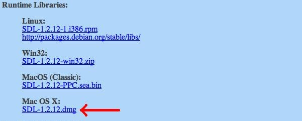

Setting up SDL for XCode
Last Updated 12/21/12
1) First thing you need to do is download the SDL library. It's available on the SDL website.
2) Open up the runtime package. Copy the SDL.framework folder to /Library/Frameworks. For those unfamiliar with Lion, pressing command+shift+g to get a path prompt.
If you don't have root access, you can put it in your user's Library/Frameworks directory.
3) Start up XCode and create a new XCode project. Select SDL Command Line Application.
4) Go back to the runtime package and copy the SDLmain templates from the devel directory to your project directory and add them to your project.
5) Click on your target to bring up the Build Settings/Build Phases/Build Rules tabs.
6) In the Build Settings tab, add /Library/Frameworks to the Framework search paths so XCode can find the frameworks we added.
7) In the Build Phases tab under Link Binary With Libraries add the Cocoa Framework.
8) Now you're going to have to add SDL framework. Click Add Other to bring up the file selector menu and then hit command+shift+g to go the the /Library/Frameworks directory and open the SDL.framework framework.
9) Go into the SDLmain.m template file you added and change #include "SDL.h" to #include "SDL/SDL.h"
10) Go into main.cpp file that XCode auto generated and replace the code inside with the following code.

Fortunately, the runtime and development libraries are the same for Mac OS X Lion.2) Open up the runtime package. Copy the SDL.framework folder to /Library/Frameworks. For those unfamiliar with Lion, pressing command+shift+g to get a path prompt.
If you don't have root access, you can put it in your user's Library/Frameworks directory.
3) Start up XCode and create a new XCode project. Select SDL Command Line Application.
4) Go back to the runtime package and copy the SDLmain templates from the devel directory to your project directory and add them to your project.
5) Click on your target to bring up the Build Settings/Build Phases/Build Rules tabs.
6) In the Build Settings tab, add /Library/Frameworks to the Framework search paths so XCode can find the frameworks we added.
7) In the Build Phases tab under Link Binary With Libraries add the Cocoa Framework.
8) Now you're going to have to add SDL framework. Click Add Other to bring up the file selector menu and then hit command+shift+g to go the the /Library/Frameworks directory and open the SDL.framework framework.
9) Go into the SDLmain.m template file you added and change #include "SDL.h" to #include "SDL/SDL.h"
10) Go into main.cpp file that XCode auto generated and replace the code inside with the following code.
#include "SDL/SDL.h"
int main( int argc, char* args[] )
{
//Start SDL
SDL_Init( SDL_INIT_EVERYTHING );
//Quit SDL
SDL_Quit();
return 0;
}
If it compiles you're done. Otherwise go back and make sure you didn't skip a step.